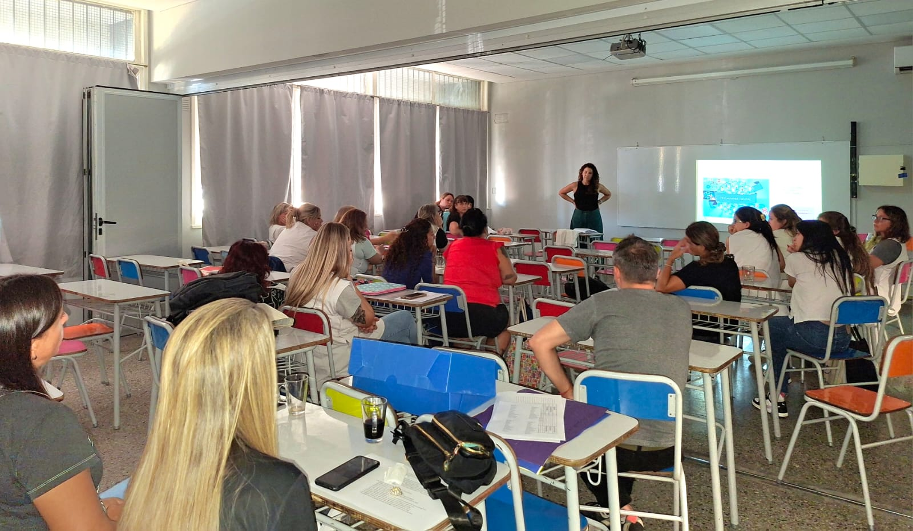

Bienvenidos y bienvenidas. Esta propuesta de consultoría pedagógica está dirigida a instituciones educativas y organismos que buscan fortalecer sus prácticas de enseñanza, cuidado y convivencia desde un enfoque integral, situado y corresponsable. En diálogo con los marcos normativos vigentes y con los desafíos que hoy plantea la cultura digital, se ofrecen instancias de asesoramiento, formación y acompañamiento para equipos de conducción, docentes y familias. El propósito es contribuir a la construcción de respuestas institucionales reflexivas frente a problemáticas contemporáneas vinculadas con la convivencia escolar, la ciudadanía digital, la ESI, las violencias y el cuidado de niñas, niños y adolescentes.
Mi nombre es Karina Vukusic, soy Licenciada en Educación (UnQui), maestranda en Políticas Públicas Educativas (Unipe), especialista en Escuela y Cultura Digital y profesora de nivel primario. Mi recorrido integra docencia, capacitación, asesoramiento pedagógico, producción académica y trabajo en políticas públicas vinculadas a derechos, ESI y violencias.
Desde este espacio voy a compartir publicaciones, recursos, reflexiones y novedades vinculadas con la consultoría pedagógica, la cultura digital, la formación docente y el trabajo con instituciones educativas y organismos.
Cada línea puede presentarse como charla, jornada institucional, taller situado, ciclo de formación o consultoría según el tipo de institución y sus necesidades.
Propuestas orientadas a fortalecer capacidades institucionales frente a problemáticas emergentes del escenario escolar contemporáneo.
Acompañamiento para supervisar prácticas, fortalecer protocolos, construir criterios de intervención y diseñar acciones pedagógicas sostenibles.
Encuentros destinados a acompañar a las familias en la comprensión de los entornos digitales, los vínculos y los cuidados necesarios.
Producción académica y divulgación científica
Dictado de talleres y jornadas con familias, docentes y equipos escolares.

PróximoUn espacio de reflexión y herramientas prácticas para acompañar a niñas, niños y adolescentes en el uso responsable de las tecnologías.
Agenda una charla o consulta personalizada
karinavukusic72@gmail.com
+54 11 2451 3986
Quilmes, Buenos Aires, Argentina
linkedin.com/in/karina-vukusic